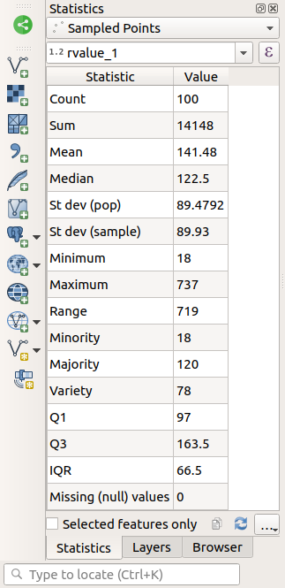
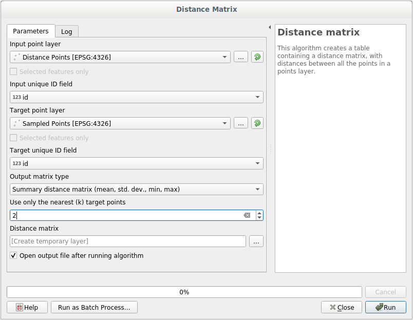
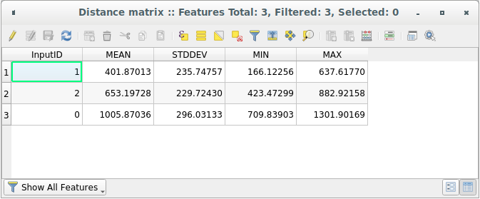

重要
翻訳は あなたが参加できる コミュニティの取り組みです。このページは現在 100.00% 翻訳されています。
6.4. レッスン: 空間統計
注釈
LinfinitiとS Motala（ケープ半島工科大学）が開発したレッスン
空間統計を使用すると、特定のベクトルデータセットで何が起こっているかを分析して理解できます。 QGISには統計分析のための多くの便利なツールが含まれています。
このレッスンの目標： プロセシングツールボックス 内でQGISの空間統計ツールを使用する方法を知ること。
6.4.1. ★☆☆ （初級レベル） 理解しよう: テストデータセットの作成
ランダムな点群を作成し、作業用のデータセットを取得します。
そのためには、ポイントを作成する領域を定義するポリゴンデータセットが必要になります。
街路でカバーされるエリアを使用します。
新しいプロジェクトを開始します
roadsデータセットと、exercise_data/raster/SRTM/にあるsrtm_41_19（標高データ） を追加します。注釈
SRTM DEMレイヤのCRSは、道路レイヤのCRSとは異なる場合があります。 QGISは両方のレイヤを単一のCRSで再投影しています。次の演習では、この違いは重要ではありませんが、自由に再投影してください（このモジュールの前半で示したように）。
プロセシング ツールボックスを開きます
ツールを使用して ジオメトリタイプ として
凸包を選択し、すべての道路を囲むエリアを生成します:
ご存知のように、出力を指定しない場合、 プロセシング は一時的なレイヤを作成します。レイヤをすぐに、または後の段階で保存するのはあなた次第です。
ランダム点群の作成
にあるツールを使って、この領域に最小距離
0.0のランダムな点を100個作成します:
注釈
黄色の警告サインは、そのパラメータが距離に関係していることを示しています。 境界ジオメトリ レイヤはある地理座標系にあり、アルゴリズムはこれを思い出させます。この例では、このパラメータを使用しないため、無視してかまいません。
必要に応じて、生成されたランダム点を凡例の一番上に移動させると見やすくなります:
データのサンプリング
ラスタからサンプルデータセットを作成するには、 アルゴリズムを使用する必要があります。このツールは、ポイントの位置でラスタをサンプリングし、ラスタ内のバンドの数に応じて、新しいフィールドにラスタ値を追加します。
Sample raster values アルゴリズムダイアログを開きます
サンプリングポイントを含むレイヤとして
Random_pointsを選択し、値を取得するバンドとしてSRTMラスタを選択します。新しいフィールドのデフォルト名はrvalue_Nです。ここで、Nはラスタバンドの番号です。必要に応じて、プレフィックスの名前を変更できます。
実行 を押します
これで、ラスタファイルからサンプリングされたデータを サンプリングした出力 レイヤの属性テーブルで確認することができます。それらは、選択した名前の新しいフィールドに入ります。
サンプルレイヤはここに示すとおりです:

サンプルポイントは、赤いポイントがより高い高度になるように、「rvalue_1」フィールドを使用して分類されます。
このサンプルレイヤは、残りの統計演習で使用します。
6.4.2. ★☆☆ （初級レベル） 理解しよう: 基本統計
さて、このレイヤに対して基本統計を取得しましょう。
属性ツールバー にある
 統計の要約を表示 アイコンをクリックします。新しいパネルがポップアップします。
統計の要約を表示 アイコンをクリックします。新しいパネルがポップアップします。表示されたダイアログで、
サンプリングした出力レイヤをソースとして指定します。フィールドコンボボックスで rvalue_1 フィールドを選択します。このフィールドは、統計情報を計算するフィールドです。
算出された統計情報で 統計量の出力 パネルが自動的に更新されます:
 注釈
 統計をクリップボードにコピー ボタンをクリックして値をコピーし、結果をスプレッドシートに貼り付けることができます。
統計をクリップボードにコピー ボタンをクリックして値をコピーし、結果をスプレッドシートに貼り付けることができます。終了したら 統計量の出力 パネルを閉じます
さまざまな統計が用意されています:
- カウント
サンプル/値の個数
- 合計
値を足したもの。
- 平均
平均（アベレージ）値は、単純に値の合計を値の個数で割ったものです。
- 中間値
すべての値を最小から最大に並べると、中央値（または、Nが偶数の場合は2つの中央値の平均）が値の中央値になります。
- 標準偏差（母集団）
標準偏差。値が平均値の周りのどの程度近くに密集しているかの指標を与えます。標準偏差が小さいほど、値が平均値により近づく傾向があります。
- 最小値
値の最小値です。
- 最大
値の最大値です。
- 範囲
最小および最大値間の差です。
- 第１四分位
データの第１四分位。
- 第３四分位
データの第３四分位
- 欠落(NULL)値
欠落値の個数。
6.4.3. ★☆☆ （初級レベル） 理解しよう: 点間の距離についての統計を計算
新しい一時的な点レイヤを作成します。
編集モードに入り、他の点のどこかにある3点をデジタイズします。
または、先ほどと同じランダム点群生成方法で、3 点だけ指定します。
新しいレイヤを distance_points という名前で、お好みのフォーマットで保存します。
2つのレイヤのポイント間の距離の統計を作成するには:
ツールを開きます。
入力レイヤとして
distance_pointsを、ターゲットレイヤとしてSampled Pointsを選択します。このように設定します:
 必要に応じて、出力レイヤをファイルとして保存するか、アルゴリズムを実行して後で一時出力レイヤを保存することができます。
実行 をクリックすると、距離行列レイヤが生成されます。
生成されたレイヤの属性テーブルを開きます。値は、 distance_points 地物と SampledPoints レイヤ内の2つの最も近いポイントの間の距離を参照します：

距離行列 ツールはこれらのパラメータを使って、 ターゲットレイヤの最も近いポイントを基準にした入力レイヤの各ポイントの距離統計を計算します。出力レイヤのフィールドには、入力レイヤのポイントの最近傍までの距離の平均、標準偏差、最小値、および最大値が含まれます。
6.4.4. ★☆☆ （初級レベル） 理解しよう: 最近傍解析（レイヤ内）
ポイントレイヤの再近傍解析をするには:
を選びます。
表示されたダイアログで ランダム点群出力 レイヤを選択し、 実行 をクリックします。
結果は、プロセシング 結果ビューア パネルに表示されます。

青いリンクをクリックすると、結果の
htmlページが表示されます:
6.4.5. ★☆☆ （初級レベル） 理解しよう: 加重平均座標
データセットの平均座標を取得するために:
表示されたダイアログで、 入力レイヤ に ランダム点群出力 を指定し、オプションの選択はそのままにしておきます。
実行 をクリックします。
ランダムサンプルを作成する際に使用したポリゴンの中心座標と比較してみましょう。
表示されたダイアログで、入力レイヤとして
Bounding geometryを選択します。
ご覧のように、平均座標（ピンクの点）と調査地域の中心（緑の点）は必ずしも一致していません。
図心はレイヤの重心（正方形の重心は正方形の中心）であり、平均座標はすべてのノード座標の平均を表します。
6.4.6. ★☆☆ （初級レベル） 理解しよう: 画像ヒストグラム
データセットのヒストグラムは、その値の分布を示しています。 QGISでこれを示す最も簡単な方法は、画像ヒストグラムを使用することです。これは、任意の画像レイヤ（ラスタデータセット）の レイヤプロパティ ダイアログで利用できます。
レイヤ パネルで
srtm_41_19レイヤを右クリックしますを選びます
ヒストグラム タブを選択します。グラフィックを生成するには、 ヒストグラムの計算 ボタンをクリックする必要がある場合があります。ラスタ値の度数分布を示すグラフが表示されます。

グラフは
 プロットの保存 ボタンで画像としてエクスポートすることができます
プロットの保存 ボタンで画像としてエクスポートすることができますレイヤに関するより詳細な情報は、 情報 タブで見ることができます（平均値と最大値は推定値であり、正確でない可能性があります）。
平均値は「332.8」（推定324.3）、最大値は「1699」（推定1548）！ヒストグラムを拡大できます。値が「0」のピクセルがたくさんあるため、ヒストグラムは垂直方向に圧縮されたように見えます。ズームインして「0」のピーク以外のすべてをカバーすると、詳細が表示されます：

注釈
平均値と最大値が上記と同じでない場合は、最小値/最大値の計算が原因である可能性があります。 シンボロジ タブを開き、 最小 / 最大値設定 メニューを展開します。  最小/最大 を選択し、 適用 をクリックします。
最小/最大 を選択し、 適用 をクリックします。
ヒストグラムは、値の分布を示すものであり、必ずしもすべての値がグラフ上に表示されるわけではないことに留意してください。
6.4.7. ★☆☆ （初級レベル） 理解しよう: 空間補間
データを推定したい標本点のコレクションがあるとしましょう。たとえば、前に作成した Sampled points データセットにアクセスでき、地形がどのように見えるかを知りたいとします。
まず、 プロセシングツールボックス にある ツールを起動します。
入力レイヤ（点） に
Sampled pointsを選びます重み付けの累乗`を ``5.0` に設定します
詳細パラメータ で、 内挿するZ値の属性（フィールド） を
rvalue_1に設定します最後に 実行 をクリックし、処理が終了するまで待ちます
ダイアログを閉じます
これは、元のデータセット（左）とサンプルポイントから構築されたデータセット（右）の比較です。サンプルポイントの位置がランダムであるため、見た目が異なる場合があります。

ご覧のとおり、地形の詳細な印象を得るには、100個のサンプルポイントでは十分ではありません。これは非常に一般的な考え方ですが、誤解を招く可能性もあります。
6.4.8. ★★☆ （中級レベル） 自分でやってみよう: 補間方法の違い
上記の手順を使用して、10000個のランダムな点のセットを作成します
注釈
点の個数が多い場合、処理に時間がかかることがあります。
これらの点を利用して、オリジナルのDEMをサンプリングします
このデータセットには Grid (IDW with nearest neighbor searching) ツールを使用します。
累乗 と スムージング をそれぞれ
5.0と2.0に設定します。
結果（ランダムな点の位置に応じて）多かれ少なかれ、このようになります。

これは、サンプルポイントの密度が高いため、地形をより適切に表現できます。サンプルが大きいほど良い結果が得られることを忘れないでください。
6.4.9. 結論
QGISには、データセットの空間統計プロパティを分析するためのツールがいくつかあります。
6.4.10. 次は?
ベクタ解析について説明しましたが、次はラスタで何ができるかを見てみましょう。これが次のモジュールで行うことです！